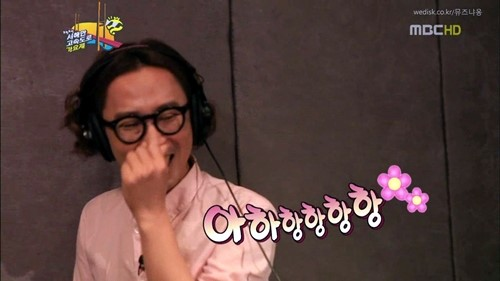
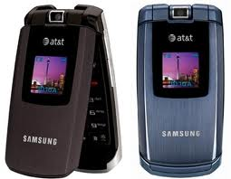
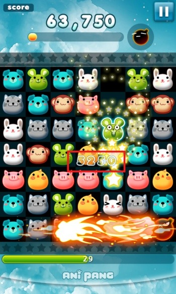
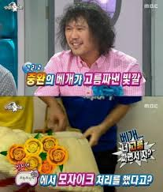
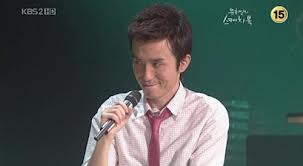
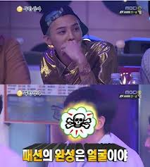
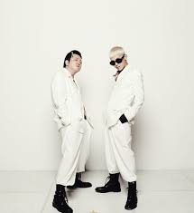
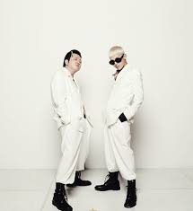

TryingHyungdongEveryday I say I’m going to try but I couldn’t do it I am going to lift up my heart and I’m going to try This is Hyungdon Tonight, I’m going to make something happen, (Wait a minute) Chorus 1Hyungdoni is rapping hong hong hong, Jiyong is rapping hong hong hong Hyngdon had Jung, Jaehyung as a partner for Infinite Ch allenge music festival in 2011. Jaehyung became popular for his character. One of the aspect of character was his distinct laughing sound, hong, hong, hong  We’re both rapping hong hong hong, are you watching? Are you listening? Hyngdon has used this expression for provoking GD. He has very bad fassion sense but probably in korea the only one who dare to criticize GD regarding fasion. That is the point of the joke. When he switches from 2G to LTE, he’s trying, trying to do something with you  He wants to give you a heart for that last pang, trying, trying to do something A popular Korean mobile app game.  When he can’t normally drink but offers to be a black knight for you, he’s trying, trying to do something, trying desperately.At a party with alcohol, Koreans tend to encourage or force to drink making turns. To save a turn for usually a girl, a guy volunteers to drink for her. He is called a black knight. Koongs koongs koongs, koong koong ddari koong koong dda, he’s trying, trying, trying to do something When he used to have a pus pillow but switches to latex, he’s trying, trying, trying to do somethingPus pillow refers very dirty pillow which turns yellow. One of the musicans in Infinite Challenge music festival 2013 had an embarrassing moment when someone revealed his pus pillow.  He has been fine but suddenly looks you with the eye of falconIf a guy’s eyes change into like this…. You know he’s trying to look at the sun? No, look at the moon. Trying Trying. Trying sounds in Korean, Hae-bol-la-go. The first syllable hae sounds same with sun in Korean. They are playing with words. Fashion is completed with the face, hong hong hong GD gave a lesson to Jung, hyungdon who had been criticized about his fashion in funny was. His message was that Hyungdon had been trying to improve his fashion but he is too ugly to compete with GD. How music is complete? Hyung-Yong-Don-Jong (Hyung Give Me Allowance) Hyung from Hyung-don’s name One plus one, Yong plus Don, when I say hip, you say hop, hip-hop On Saturday everyone watchs Infinity Challenge laughing ho ho ho Infinity Challenge is a Korean variety show. Everyone sing along, trying to do something One plus one, Yong plus Don, let’s become one, say hip-hop (Wait a minute)
Chorus 1
Hyungdoni is rapping hong hong hong, Jiyong is rapping hong hong hong Hey hyungahya, hong, ungah, ungah, ungah, heyHyungaya is calling hyung(senior) in very intimate, childish way. Ungah is even more intimate, almost retarded way. Hey hyungahya, hong, ungah, ungah, ungah, hey Still Hyungdoni is rapping, still Jiyong is also rapping It’s not over yet, there’s still a little more, more rapping It’s starting, there’s still a little more, more dancing We are going to dance hong hong hong We will dance, trying to do something Hong hong hong hong hong hong We will dance Trying to do something hong hong hong hong hong hong trying to do something |
 He is representing males who have difficulty to find girl friends. That is not the case for GD. 
He is representing males who have difficulty to find girl friends. That is not the case for GD. 